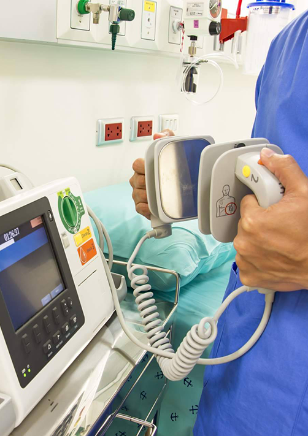

NUESTROS SERVICIOS
Conozca los servicios que KYOL, S.A. de C.V. le ofrece.
Mantenimiento a Equipo Médico
Ofrecemos mantenimiento periódico preventivo de equipo médico y calibración de equipo especializado. Con certificación según normas vigentes mexicanas.
Reparación de Equipo Médico
Ofrecemos mantenimiento correctivo a equipos médicos comunes y especializados.
Venta y Renta de Equipo Médico
Tenemos a su disposición una amplia variedad de equipo médico en todas las especialidades. Contáctenos, le enviamos cotización y/o lo asesoramos.
SERVICIO A EQUIPO MÉDICO
Realizamos Servicios a los siguientes Equipos Médicos:
- ✔ Equipos de Anestesia
- ✔ Vaporizadores de Anestesia
- ✔ Unidades de Electrocirugía
- ✔ Desfibriladores
- ✔ Monitores de Signos Vitales
- ✔ Central de Monitoreo
- ✔ Mesas de Cirugía
- ✔ Lámparas de Cirugía
- ✔ Ventiladores de Presión
- ✔ Ventiladores Volumétricos
- ✔ Ventiladores Pediátricos
- ✔ Instrumental Quirúrgico
- ✔ Microscopios de Cirugía
- ✔ Equipos de Rayos X
- ✔ Unidades de Electrocirugía (Electrobisturi)
- ✔ Tococardiografos
- ✔ Colposcopios
- ✔ Esterilizadores
- ✔ Unidades Dentales

- ✔ Compresores
- ✔ Autoclaves
- ✔ Basculas
- ✔ Desmineralizadores
- ✔ Microscopios
- ✔ Centrifugas
- ✔ Mesas de Cirugía
- ✔ Lámparas de Cirugía
- ✔ Ventiladores de Presión